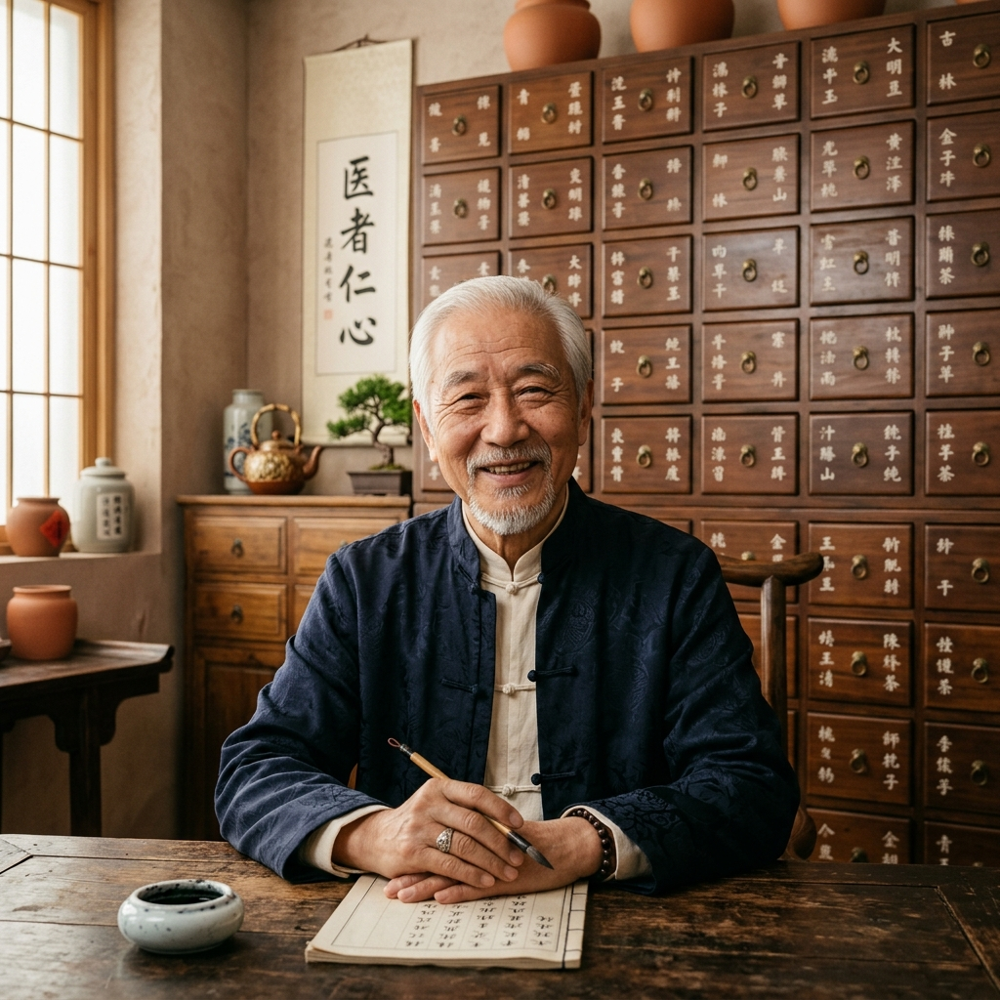
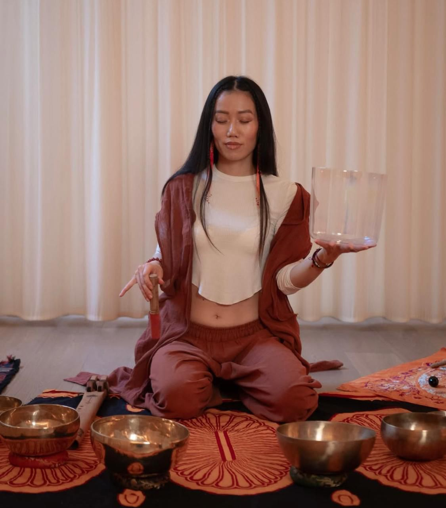
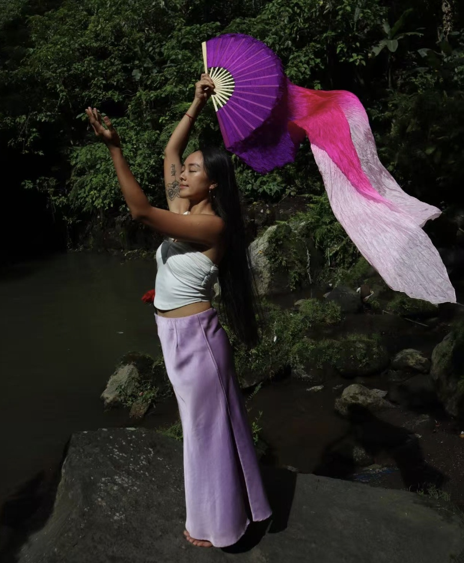

Unsere Experten & Spezialisten
Lernen Sie unser engagiertes Team kennen, das Brücken zwischen Tradition und moderner Genesung schlägt.

PROFESSOR Xu Ruqi (徐汝奇)
Professor Xu Ruqi verfügt über mehr als 40 Jahre Erfahrung in Pulsdiagnostik und klassischer Kräutermedizin. Als klinischer Experte an der Pekinger Universität für Chinesische Medizin ist er weltweit bekannt für die Behandlung schwerer chronischer Krankheiten, Tumoren und gynäkologischer Leiden.

Dr. Qiao Jingwen (乔靖文)
Dr. Qiao Jingwen ist Direktorin der Hong Dao Klinik und kombiniert modernste Stammzelltherapie mit TCM-Rejuvenationstechniken für zelluläre Gesundheit, Fruchtbarkeit und hormonelle Balance.
Unser spezialisiertes Team

Heilpraktikerin Deng Nanjing (郓楠景)
Übersetzung, Klangbegleitung, Qi Gong & Patientenbetreuung. 5 Sprachen.
Dr. Guan Weina (管蔚娜)
Akupunkteurin, Massagen und Kosmetik Behandlungen.
Dr. Chen Kainan (陈凯南) — Assistenzarzt
Assistenzarzt, spezialisiert auf Akupunktur und klinische Unterstützung unter Anleitung von Professor Xu.
Dr. Zhang Hailin (张海林)
Leiterin des Dekokt-Zentrums. Expertin für traditionelle Kräuterzubereitung & Qualitätskontrolle.

Cheung Mingli
Nomadin, Yogalehrerin für Kinder und Erwachsene, Fächer-Tanz-Therapeutin & Klangarbeiterin mit 10+ Jahren internationaler Erfahrung.
Modernes Dekokt-Zentrum & Dao Di Kräuter
Wir beziehen ausschließlich hochwertige Dao Di Kräuter (道地藥材) aus kontrolliert biologischem Anbau und Soil-Technik aus den Herkunftsregionen, die für die jeweilige Pflanze die optimalen klimatischen und energetischen Bedingungen bieten.
In unserem hauseigenen Dekokt-Zentrum werden die Heilkräuter unter Aufsicht von Meister Xu individuell für Sie extrahiert, präzise verarbeitet und portioniert als gebrauchsfertige Kräuterdekokte (Ready-to-Drink) abgepackt, die Sie unkompliziert mit nach Hause nehmen können.